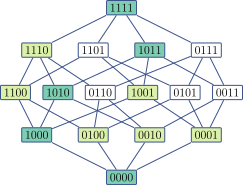
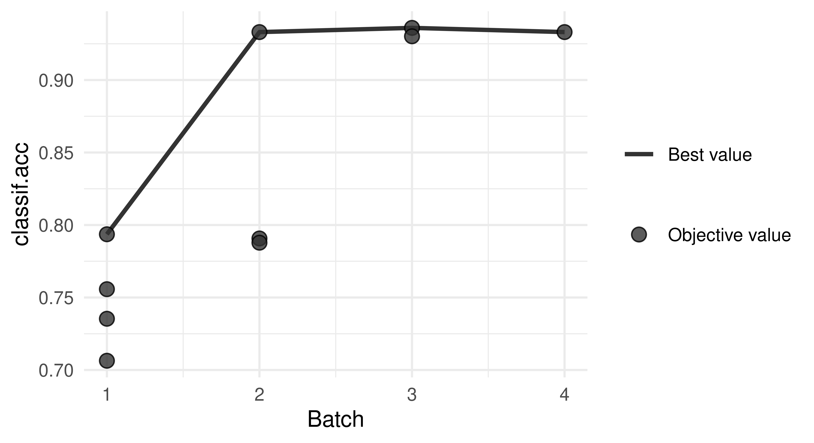

library(mlr3filters)
flt_gain = flt("information_gain")6 Feature Selection
Marvin N. Wright
Leibniz Institute for Prevention Research and Epidemiology – BIPS, and University of Bremen, and University of Copenhagen
Feature selection, also known as variable or descriptor selection, is the process of finding a subset of features to use with a given task and learner. Using an optimal set of features can have several benefits:
- improved predictive performance, since we reduce overfitting on irrelevant features,
- robust models that do not rely on noisy features,
- simpler models that are easier to interpret,
- faster model fitting, e.g. for model updates,
- faster prediction, and
- no need to collect potentially expensive features.
However, these objectives will not necessarily be optimized by the same set of features and thus feature selection can be seen as a multi-objective optimization problem. In this chapter, we mostly focus on feature selection as a means of improving predictive performance, but also briefly cover the optimization of multiple criteria (Section 6.2.5).
Reducing the number of features can improve models across many scenarios, but it can be especially helpful in datasets that have a high number of features in comparison to the number of data points. Many learners perform implicit, also called embedded, feature selection, e.g. via the choice of variables used for splitting in a decision tree. Most other feature selection methods are model agnostic, i.e. they can be used together with any learner. Of the many different approaches to identifying relevant features, we will focus on two general concepts, which are described in detail below: Filter and Wrapper methods (Guyon and Elisseeff 2003; Chandrashekar and Sahin 2014).
6.1 Filters
Filter methods are preprocessing steps that can be applied before training a model. A very simple filter approach could look like this:
- calculate the correlation coefficient \(\rho\) between each feature and a numeric target variable, and
- select all features with \(\rho > 0.2\) for further modeling steps.
This approach is a univariate filter because it only considers the univariate relationship between each feature and the target variable. Further, it can only be applied to regression tasks with continuous features and the threshold of \(\rho > 0.2\) is quite arbitrary. Thus, more advanced filter methods, e.g. multivariate filters based on feature importance, usually perform better (Bommert et al. 2020). On the other hand, a benefit of univariate filters is that they are usually computationally cheaper than more complex filter or wrapper methods. In the following, we describe how to calculate univariate, multivariate and feature importance filters, how to access implicitly selected features, how to integrate filters in a machine learning pipeline and how to optimize filter thresholds.
Filter algorithms select features by assigning numeric scores to each feature, e.g. correlation between features and target variable, use these to rank the features and select a feature subset based on the ranking. Features that are assigned lower scores are then omitted in subsequent modeling steps. All filters are implemented via the package mlr3filters. Below, we cover how to
- instantiate a
Filterobject, - calculate scores for a given task, and
- use calculated scores to select or drop features.
Special cases of filters are feature importance filters (Section 6.1.2) and embedded methods (Section 6.1.3). Feature importance filters select features that are important according to the model induced by a selected Learner. They rely on the learner to extract information on feature importance from a trained model, for example, by inspecting a learned decision tree and returning the features that are used as split variables, or by computing model-agnostic feature importance (Chapter 12) values for each feature. Embedded methods use the feature selection that is implicitly performed by some learners and directly retrieve the internally selected features from the learner.
Independent Learners and Filters
The learner used in a feature importance or embedded filter is independent of learners used in subsequent modeling steps. For example, one might use feature importance of a random forest for feature selection and train a neural network on the reduced feature set.
Many filter methods are implemented in mlr3filters, including:
- Correlation, calculating Pearson or Spearman correlation between numeric features and numeric targets (
flt("correlation")) - Information gain, i.e. mutual information of the feature and the target or the reduction of uncertainty of the target due to a feature (
flt("information_gain")) - Minimal joint mutual information maximization (
flt("jmim")) - Permutation score, which calculates permutation feature importance (see Chapter 12) with a given learner for each feature (
flt("permutation")) - Area under the ROC curve calculated for each feature separately (
flt("auc"))
Most of the filter methods have some limitations, for example, the correlation filter can only be calculated for regression tasks with numeric features. For a full list of all implemented filter methods, we refer the reader to https://mlr3filters.mlr-org.com, which also shows the supported task and features types. A benchmark of filter methods was performed by Bommert et al. (2020), who recommend not to rely on a single filter method but to try several ones if the available computational resources allow. If only a single filter method is to be used, the authors recommend to use a feature importance filter using random forest permutation importance (see (Section 6.1.2)), similar to the permutation method described above, but also the JMIM and AUC filters performed well in their comparison.
6.1.1 Calculating Filter Values
The first step is to create a new R object using the class of the desired filter method. These are accessible from the mlr_filters dictionary with the sugar function flt(). Each object of class Filter has a $calculate() method, which computes the filter values and ranks them in a descending order. For example, we can use the information gain filter described above:
flt()$calculate()Such a Filter object can now be used to calculate the filter on tsk("penguins") and get the results:
tsk_pen = tsk("penguins")
flt_gain$calculate(tsk_pen)
as.data.table(flt_gain) feature score
1: flipper_length 0.581168
2: bill_length 0.544897
3: bill_depth 0.538719
4: island 0.520157
5: body_mass 0.442880
6: sex 0.007244
7: year 0.000000This shows that the flipper and bill measurements are the most informative features for predicting the species of a penguin in this dataset, whereas sex and year are the least informative. Some filters have hyperparameters that can be changed in the same way as Learner hyperparameters. For example, to calculate "spearman" instead of "pearson" correlation with the correlation filter:
flt_cor = flt("correlation", method = "spearman")
flt_cor$param_set<ParamSet(2)>
id class lower upper nlevels default value
1: use ParamFct NA NA 5 everything [NULL]
2: method ParamFct NA NA 3 pearson spearman6.1.2 Feature Importance Filters
To use feature importance filters, we can use a learner with with an $importance() method that reports feature importance. All learners with the property “importance” have this functionality. A list of all learners with this property can be found with
as.data.table(mlr_learners)[
sapply(properties, function(x) "importance" %in% x)]For some learners, the desired filter method needs to be set as a hyperparameter. For example, lrn("classif.ranger") comes with multiple integrated methods, which can be selected during construction: To use the feature importance method "impurity", select it during learner construction:
lrn("classif.ranger")$param_set$levels$importance[1] "none" "impurity" "impurity_corrected"
[4] "permutation" lrn_ranger = lrn("classif.ranger", importance = "impurity")We first have to remove missing data because the learner cannot handle missing data, i.e. it does not have the property “missing”. Note we use the $filter() method presented in Section 2.1.3 here to remove rows; the “filter” name is unrelated to feature filtering, however.
tsk_pen = tsk("penguins")
tsk_pen$filter(tsk_pen$row_ids[complete.cases(tsk_pen$data())])Now we can use flt("importance") to calculate importance values:
flt_importance = flt("importance", learner = lrn_ranger)
flt_importance$calculate(tsk_pen)
as.data.table(flt_importance) feature score
1: bill_length 76.375
2: flipper_length 45.349
3: bill_depth 36.306
4: body_mass 26.458
5: island 24.078
6: sex 1.597
7: year 1.2166.1.3 Embedded Methods
Many learners internally select a subset of the features which they find helpful for prediction, but ignore other features. For example, a decision tree might never select some features for splitting. These subsets can be used for feature selection, which we call embedded methods because the feature selection is embedded in the learner. The selected features (and those not selected) can be queried if the learner has the "selected_features" property. As above, we can find those learners with
as.data.table(mlr_learners)[
sapply(properties, function(x) "selected_features" %in% x)]For example, we can use lrn("classif.rpart"):
tsk_pen = tsk("penguins")
lrn_rpart = lrn("classif.rpart")
lrn_rpart$train(tsk_pen)
lrn_rpart$selected_features()[1] "flipper_length" "bill_length" "island" The features selected by the model can be extracted by a Filter object, where $calculate() corresponds to training the learner on the given task:
flt_selected = flt("selected_features", learner = lrn_rpart)
flt_selected$calculate(tsk_pen)
as.data.table(flt_selected) feature score
1: island 1
2: flipper_length 1
3: bill_length 1
4: bill_depth 0
5: sex 0
6: year 0
7: body_mass 0Contrary to other filter methods, embedded methods just return values of 1 (selected features) and 0 (dropped feature).
6.1.4 Filter-Based Feature Selection
After calculating a score for each feature, one has to select the features to be kept or those to be dropped from further modeling steps. For the "selected_features" filter described in embedded methods (Section 6.1.3), this step is straight-forward since the methods assign either a value of 1 for a feature to be kept or 0 for a feature to be dropped. Below, we find the names of features with a value of 1 and select those features with task$select(). At first glance it may appear a bit convoluted to have a filter assign scores based on the feature names returned by $selected_features(), only to turn these scores back into the names of the features to be kept. However, this approach allows us to use the same interface for all filter methods, which is especially useful when we want to automate the feature selection process in pipelines, as we will see in Section 8.4.5.
flt_selected$calculate(tsk_pen)
# select all features used by rpart
keep = names(which(flt_selected$scores == 1))
tsk_pen$select(keep)
tsk_pen$feature_names[1] "bill_length" "flipper_length" "island" For filter methods that assign continuous scores, there are essentially two ways to select features:
- Select the top \(k\) features; or
- Select all features with a score above a threshold \(\tau\).
The first option is equivalent to dropping the bottom \(p-k\) features. For both options, one has to decide on a threshold, which is often quite arbitrary. For example, to implement the first option with the information gain filter:
tsk_pen = tsk("penguins")
flt_gain = flt("information_gain")
flt_gain$calculate(tsk_pen)
# select top three features from information gain filter
keep = names(head(flt_gain$scores, 3))
tsk_pen$select(keep)
tsk_pen$feature_names[1] "bill_depth" "bill_length" "flipper_length"Or, the second option with \(\tau = 0.5\):
tsk_pen = tsk("penguins")
flt_gain = flt("information_gain")
flt_gain$calculate(tsk_pen)
# select all features with score > 0.5 from information gain filter
keep = names(which(flt_gain$scores > 0.5))
tsk_pen$select(keep)
tsk_pen$feature_names[1] "bill_depth" "bill_length" "flipper_length" "island" In Section 8.4.5 we will return to filter-based feature selection and how we can use pipelines and tuning to automate and optimize the feature selection process.
6.2 Wrapper Methods
Wrapper methods work by fitting models on selected feature subsets and evaluating their performance (Kohavi and John 1997). This can be done in a sequential fashion, e.g. by iteratively adding features to the model in sequential forward selection, or in a parallel fashion, e.g. by evaluating random feature subsets in a random search. Below, we describe these simple approaches in a common framework along with more advanced methods such as genetic search. We further show how to select features by optimizing multiple performance measures and how to wrap a learner with feature selection to use it in pipelines or benchmarks.
In more detail, wrapper methods iteratively evaluate subsets of features by resampling a learner restricted to this feature subset and with a chosen performance metric (with holdout or a more expensive CV), and using the resulting performance to guide the search. The specific search strategy iteration is defined by a FSelectorBatch object. A simple example is the sequential forward selection that starts with computing each single-feature model, selects the best one, and then iteratively always adds the feature that leads to the largest performance improvement (Figure 6.1).
 '1000' -> '1010' -> '1011' -> '1111'.">
Wrapper methods can be used with any learner, but need to train or even resample the learner potentially many times, leading to a computationally intensive method. All wrapper methods are implemented via the package mlr3fselect.
Feature Selection and HPO
The wrapper-based feature selection explained above is very similar to the black box optimization approach in HPO (Chapter 4), see also Figure 4.1. The major difference is that we search for well-performing feature subsets instead of hyperparameter configurations. This similarity is not only true in terms of underlying concepts and structure, but also with respect to mlr3 classes and API. The API is in many places nearly identical, we can use the same terminators, results are logged into an archive in a similar fashion to tuning, and we can also optimize multiple performance measures to create Pareto-optimal solutions in a similar way
6.2.1 Simple Forward Selection Example
We start with the simple example from above and do sequential forward selection with tsk("penguins"), similarly to how the sugar function tune() shown in Section 4.2 works, we can use fselect() to directly start the optimization and select features.
library(mlr3fselect)
# subset features to ease visualization
tsk_pen = tsk("penguins")
tsk_pen$select(c("bill_depth", "bill_length", "body_mass",
"flipper_length"))
instance = fselect(
fselector = fs("sequential"),
task = tsk_pen,
learner = lrn_rpart,
resampling = rsmp("cv", folds = 3),
measure = msr("classif.acc")
)To show all analyzed feature subsets and the corresponding performance, we use as.data.table(instance$archive). In this example, the batch_nr column represents the iteration of the sequential forward selection and we start by looking at the first iteration.
dt = as.data.table(instance$archive)
dt[batch_nr == 1, 1:5] bill_depth bill_length body_mass flipper_length classif.acc
1: TRUE FALSE FALSE FALSE 0.7557
2: FALSE TRUE FALSE FALSE 0.7353
3: FALSE FALSE TRUE FALSE 0.7064
4: FALSE FALSE FALSE TRUE 0.7936We see that the feature flipper_length achieved the highest prediction performance in the first iteration and is thus selected. We plot the performance over the iterations:
autoplot(instance, type = "performance")

In the plot, we can see that adding a second feature further improves the performance to over 90%. To see which feature was added, we can go back to the archive and look at the second iteration:
dt[batch_nr == 2, 1:5] bill_depth bill_length body_mass flipper_length classif.acc
1: TRUE FALSE FALSE TRUE 0.7907
2: FALSE TRUE FALSE TRUE 0.9331
3: FALSE FALSE TRUE TRUE 0.7878The improvement in batch three is small so we may even prefer to select a marginally worse model with two features to reduce data size.
To directly show the best feature set, we can use $result_feature_set which returns the features in alphabetical order (not order selected):
instance$result_feature_set[1] "bill_depth" "bill_length" "flipper_length"At the heart of mlr3fselect are the R6 classes:
-
FSelectInstanceBatchSingleCrit,FSelectInstanceBatchMultiCrit: These two classes describe the feature selection problem and store the results. -
FSelectorBatch: This class is the base class for implementations of feature selection algorithms.
Internally, the fselect() function creates an FSelectInstanceBatchSingleCrit object and executes the feature selection with an FSelectorBatch object, based on the selected method, in this example an FSelectorBatchSequential object. This is similar to what happens in the tune() function and will be explained in more detail in the following section. It uses the supplied resampling and measure to evaluate all feature subsets provided by the FSelectorBatch on the task.
In the following two sections, these classes will be created manually, to learn more about the mlr3fselect package.
6.2.2 The FSelectInstance Classes
Note that we have not selected a feature selection algorithm and thus did not select any features, yet. We have also supplied a Terminator, which is used to stop the feature selection, these are the same objects as we saw in Section 4.1.2.
To start the feature selection, we still need to select an algorithm which are defined via the FSelectorBatch class, described in the next section.
6.2.3 The FSelector Class
The FSelectorBatch class is the base class for different feature selection algorithms. The following algorithms are currently implemented in mlr3fselect:
- Random search, trying random feature subsets until termination (
fs("random_search")) - Exhaustive search, trying all possible feature subsets (
fs("exhaustive_search")) - Sequential search, i.e. sequential forward or backward selection (
fs("sequential")) - Recursive feature elimination, which uses a learner’s importance scores to iteratively remove features with low feature importance (
fs("rfe")) - Design points, trying all user-supplied feature sets (
fs("design_points")) - Genetic search, implementing a genetic algorithm which treats the features as a binary sequence and tries to find the best subset with mutations (
fs("genetic_search")) - Shadow variable search, which adds permuted copies of all features (shadow variables), performs forward selection, and stops when a shadow variable is selected (
fs("shadow_variable_search"))
Note that all these methods can be stopped (early) with a terminator, e.g. an exhaustive search can be stopped after a given number of evaluations. In this example, we will use a simple random search and retrieve it from the mlr_fselectors dictionary with fs().
fselector = fs("random_search")6.2.4 Starting the Feature Selection
To start the feature selection, we pass the FSelectInstanceBatchSingleCrit object to the $optimize() method of the initialized FSelectorBatch object:
fselector$optimize(instance)The algorithm proceeds as follows
- The
FSelectorBatchproposes at least one feature subset or may propose multiple subsets to be evaluated in parallel, which can be controlled via the settingbatch_size. - For each feature subset, the given learner is fitted on the task using the provided resampling and evaluated with the given measure.
- All evaluations are stored in the archive of the
FSelectInstanceBatchSingleCritobject. - The terminator is queried. If the termination criteria are not triggered, go to 1).
- Determine the feature subset with the best-observed performance.
- Store the best feature subset as the result in the instance object.
The best feature subset and the corresponding measured performance can be accessed from the instance:
as.data.table(instance$result)[, .(features, classif.acc)] features classif.acc
1: bill_depth,bill_length,flipper_length 0.936As in the forward selection example above, one can investigate all subset evaluations, which are stored in the archive of the FSelectInstanceBatchSingleCrit object and can be accessed by using as.data.table():
as.data.table(instance$archive)[1:5,
.(bill_depth, bill_length, body_mass, flipper_length, classif.acc)] bill_depth bill_length body_mass flipper_length classif.acc
1: FALSE TRUE FALSE FALSE 0.7558
2: TRUE TRUE TRUE TRUE 0.9360
3: TRUE FALSE FALSE FALSE 0.7153
4: TRUE FALSE TRUE TRUE 0.7993
5: TRUE TRUE TRUE FALSE 0.9244Now the optimized feature subset can be used to subset the task and fit the model on all observations:
tsk_pen = tsk("penguins")
tsk_pen$select(instance$result_feature_set)
lrn_rpart$train(tsk_pen)The trained model can now be used to make a prediction on external data.
6.2.5 Optimizing Multiple Performance Measures
You might want to use multiple criteria to evaluate the performance of the feature subsets. With mlr3fselect, the result is the collection of all feature subsets which are not Pareto-dominated by another subset. Again, we point out the similarity with HPO and refer to multi-objective hyperparameter optimization (see Section 5.2 and Karl et al. (2022)).
In the following example, we will perform feature selection on the sonar dataset. This time, we will use FSelectInstanceBatchMultiCrit to select a subset of features that has high sensitivity, i.e. TPR, and high specificity, i.e. TNR. The feature selection process with multiple criteria is similar to that with a single criterion, except that we select two measures to be optimized:
The function fsi creates an instance of FSelectInstanceBatchMultiCrit if more than one measure is selected. We now create an FSelectorBatch and call the $optimize() function of the FSelectorBatch with the FSelectInstanceBatchMultiCrit object, to search for the subset of features with the best TPR and FPR. Note that these two measures cannot both be optimal at the same time (except for the perfect classifier) and we expect several Pareto-optimal solutions.
fselector = fs("random_search")
fselector$optimize(instance)As above, the best feature subsets and the corresponding measured performance can be accessed from the instance.
as.data.table(instance$result)[, .(features, classif.tpr, classif.tnr)] features classif.tpr classif.tnr
1: V1,V11,V13,V14,V15,V18,...[29] 0.750 0.7241
2: V1,V10,V11,V12,V13,V14,...[60] 0.875 0.6897
3: V1,V11,V15,V16,V18,V2,...[23] 0.675 0.8276
4: V1,V10,V11,V12,V13,V14,...[54] 0.875 0.6897
5: V11,V12,V14,V15,V16,V19,...[31] 0.900 0.5517We see different tradeoffs of sensitivity and specificity but no feature subset is dominated by another, i.e. has worse sensitivity and specificity than any other subset.
6.2.6 Nested Resampling
As in tuning, the performance estimate of the finally selected feature subset is usually optimistically biased. To obtain unbiased performance estimates, nested resampling is required and can be set up analogously to HPO (see Section 4.3). We now show this as an example on the sonar task. The AutoFSelector class wraps a learner and augments it with automatic feature selection. Because the AutoFSelector itself inherits from the Learner base class, it can be used like any other learner. In the example below, a logistic regression learner is created. This learner is then wrapped in a random search feature selector that uses holdout (inner) resampling for performance evaluation. The sugar function auto_fselector can be used to create an instance of AutoFSelector:
auto_fselectorafs = auto_fselector(
fselector = fs("random_search"),
learner = lrn("classif.log_reg"),
resampling = rsmp("holdout"),
measure = msr("classif.acc"),
terminator = trm("evals", n_evals = 10)
)
afs
── <AutoFSelector> (classif.log_reg.fselector) ──────────────────────────
• Model: list
• Packages: mlr3, mlr3fselect, mlr3learners, and stats
• Predict Type: response
• Feature Types: logical, integer, numeric, character, factor, and
ordered
• Properties: offset, twoclass, and weightsThe AutoFSelector can then be passed to benchmark() or resample() for nested resampling (Section 4.3). Below we compare our wrapped learner afs with a normal logistic regression lrn("classif.log_reg").
grid = benchmark_grid(tsk("sonar"), list(afs, lrn("classif.log_reg")),
rsmp("cv", folds = 3))
bmr = benchmark(grid)$aggregate(msr("classif.acc"))
as.data.table(bmr)[, .(learner_id, classif.acc)] learner_id classif.acc
1: classif.log_reg.fselector 0.702
2: classif.log_reg 0.707We can see that, in this example, the feature selection improves prediction performance.
6.3 Conclusion
In this chapter, we learned how to perform feature selection with mlr3. We introduced filter and wrapper methods and covered the optimization of multiple performance measures. Once you have learned about pipelines we will return to feature selection in Section 8.4.5.
If you are interested in learning more about feature selection then we recommend an overview of methods in Chandrashekar and Sahin (2014); a more formal and detailed introduction to filters and wrappers is in Guyon and Elisseeff (2003), and a benchmark of filter methods was performed by Bommert et al. (2020).
| Class | Constructor/Function | Fields/Methods |
|---|---|---|
Filter |
flt() |
$calculate() |
FSelectInstanceBatchSingleCrit or FSelectInstanceBatchMultiCrit
|
fsi() / fselect()
|
- |
FSelectorBatch |
fs() |
$optimize() |
AutoFSelector |
auto_fselector() |
$train(); $predict()
|
6.4 Exercises
- Compute the correlation filter scores on
tsk("mtcars")and use the filter to select the five features most strongly correlated with the target. Resamplelrn("regr.kknn")on both the full dataset and the reduced one, and compare both performances based on 10-fold CV with respect to MSE. NB: Here, we have performed the feature filtering outside of CV, which is generally not a good idea as it biases the CV performance estimation. To do this properly, filtering should be embedded inside the CV via pipelines – try to come back to this exercise after you read Chapter 8 to implement this with less bias. - Apply backward selection to
tsk("penguins")withlrn("classif.rpart")and holdout resampling by the classification accuracy measure. Compare the results with those in Section 6.2.1 by also running the forward selection from that section. Do the selected features differ? Which feature selection method reports a higher classification accuracy in its$result? - There is a problem in the performance comparison in Exercise 2 as feature selection is performed on the test-set. Change the process by applying forward feature selection with
auto_fselector(). Compare the performance to backward feature selection from Exercise 2 using nested resampling. - (*) Write a feature selection algorithm that is a hybrid of a filter and a wrapper method. This search algorithm should compute filter scores for all features and then perform a forward search. But instead of tentatively adding all remaining features to the current feature set, it should only stochastically try a subset of the available features. Features with high filter scores should be added with higher probability. Start by coding a stand-alone R method for this search (based on a learner, task, resampling, performance measure and some control settings). Then, as a stretch goal, see if you can implement this as an R6 class inheriting from
FSelectorBatch.
6.5 Citation
Please cite this chapter as:
Wright MN. (2024). Feature Selection. In Bischl B, Sonabend R, Kotthoff L, Lang M, (Eds.), Applied Machine Learning Using mlr3 in R. CRC Press. https://mlr3book.mlr-org.com/feature_selection.html.
@incollection{citekey,
author = "Marvin N. Wright",
title = "Feature Selection",
booktitle = "Applied Machine Learning Using {m}lr3 in {R}",
publisher = "CRC Press", year = "2024",
editor = "Bernd Bischl and Raphael Sonabend and Lars Kotthoff and Michel Lang",
url = "https://mlr3book.mlr-org.com/feature_selection.html"
}